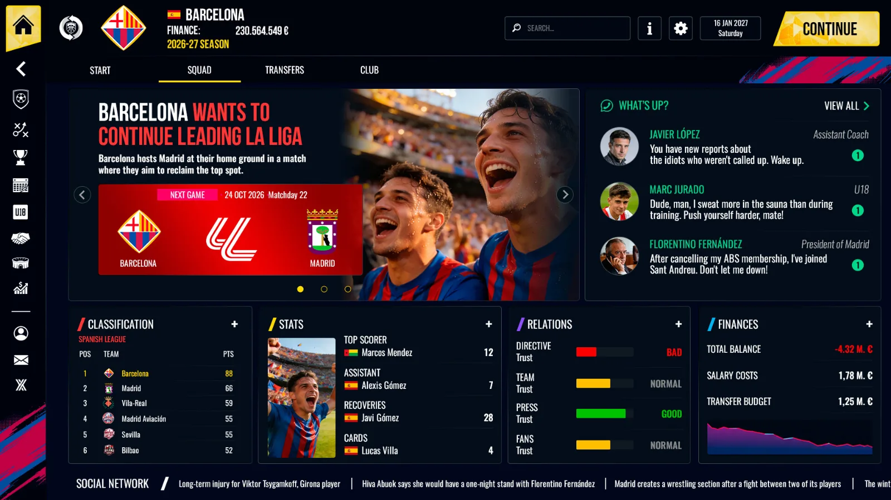
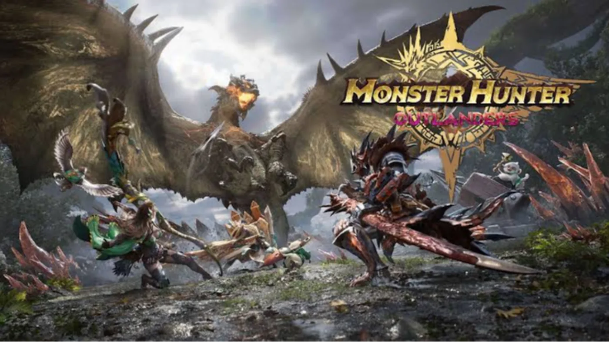
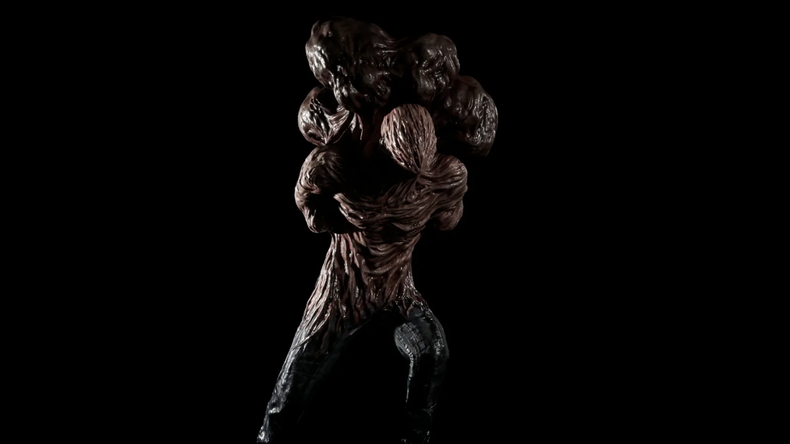
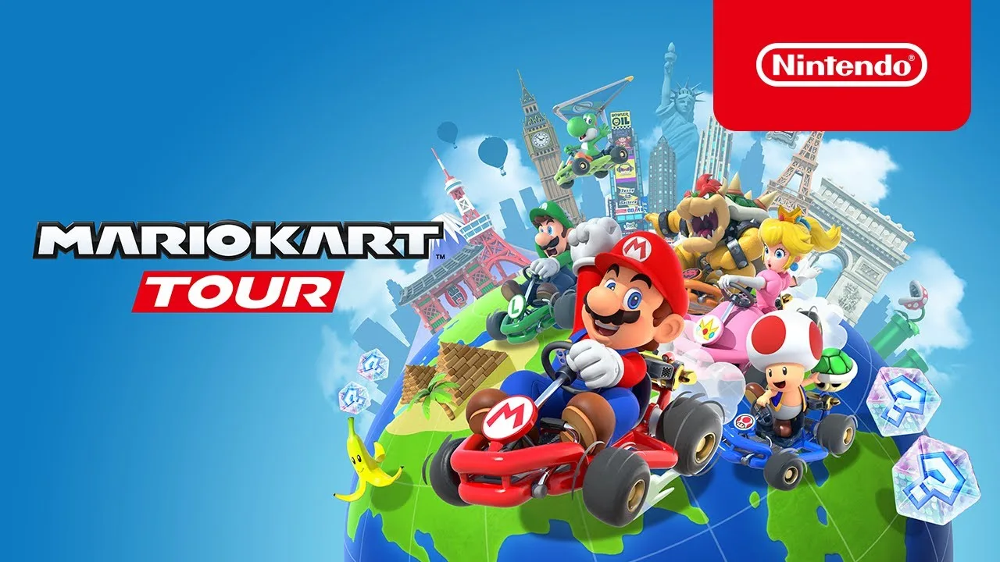
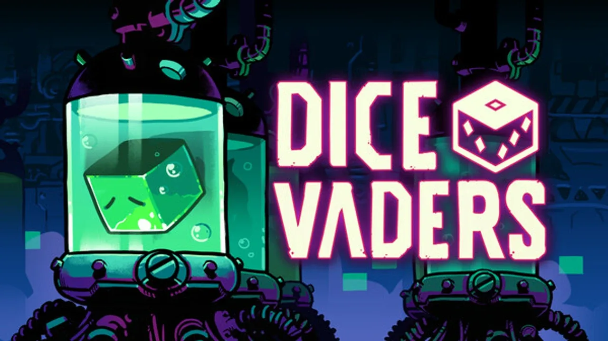

1 de octubre de 2026Football Manager 27 ya tiene fecha de lanzamiento
SEGA y Sports Interactive confirmaron que Football Manager 27 llegará el 10 de noviembre a PC, PS5, Xbox Series, iOS y Android. La nueva edición también estará disponible desde el primer día mediante Game Pass, mientras que la versión móvil llegará a través de Netflix.

1 de octubre de 2026Monster Hunter Outlanders llegará a móviles el 29 de octubre
Capcom y TiMi Studio Group confirmaron que Monster Hunter Outlanders, el nuevo RPG de acción y supervivencia basado en la popular franquicia de cacería, llegará a iOS y Android el 29 de octubre. El juego será gratuito y ofrecerá un nuevo mundo, personajes, compañeros y monstruos.

30 de septiembre de 2026Silent Hill: Townfall recibirá un parche para hacer menos frustrantes las secciones contra The Weight
Screen Burn confirmó que está trabajando en un nuevo parche para Silent Hill: Townfall que modificará el balance de las secciones de sigilo protagonizadas por The Weight. El enemigo fue uno de los aspectos más cuestionados por jugadores y análisis, debido a su comportamiento, su capacidad para detectar al protagonista y las muertes instantáneas.
 30 de septiembre de 2026
30 de septiembre de 2026
Shuhei Yoshida cree que Sony y Nintendo deberían mantener la generación actual durante más tiempo
El exdirectivo de PlayStation, Shuhei Yoshida, habló sobre el futuro del hardware y consideró que Sony y Nintendo podrían prolongar la vida de PS5 y Switch 2. Su argumento está relacionado con el aumento del precio de los componentes y con la percepción de que muchos jugadores todavía están satisfechos con el hardware actual.
 30 de septiembre de 2026
30 de septiembre de 2026
Xbox empieza a convertir juegos físicos en licencias digitales sin necesidad de volver a insertar el disco
Microsoft comenzó a desplegar para todos los usuarios una función que permite convertir determinados juegos físicos de Xbox One y Xbox Series X en licencias digitales. El sistema amplía las posibilidades de los discos, incluyendo compatibilidad con Xbox Series S, Xbox Play Anywhere y juego en la nube cuando el título lo permite.
 30 de septiembre de 2026
30 de septiembre de 2026
El exdirector creativo de Halo pide a Activision recuperar a los desarrolladores despedidos para el próximo juego
Con Halo ahora bajo la responsabilidad de Activision, Frank O'Connor, quien trabajó durante casi dos décadas en la franquicia, compartió varias posibilidades para su futuro. Entre sus recomendaciones está recuperar a veteranos despedidos de Bungie y Halo Studios y mantener uno de los elementos que considera fundamentales para la identidad de la saga: su sandbox.

30 de septiembre de 2026Mario Kart Tour cierra sus servidores después de siete años y más de 276 millones de descargas
El spin-off para celulares de Mario Kart dejó de funcionar oficialmente después de siete años de servicio. Según estimaciones de AppMagic citadas por Mobilegamer.biz, el juego superó los 276 millones de descargas y generó aproximadamente 268,5 millones de dólares para Nintendo durante su recorrido.
30 de septiembre de 2026Idea Factory presenta IFChronicle, una nueva marca de aventuras, y anuncia ICONOLOGY
Idea Factory anunció IFChronicle, una nueva marca dedicada a aventuras narrativas con intención de expandirse desde Japón hacia el mercado internacional. Su primer proyecto será ICONOLOGY, un thriller policial que combina investigación, tecnología y análisis artístico para investigar imágenes extraídas directamente de la mente de los sospechosos.

30 de septiembre de 2026DiceVaders, el spin-off de StarVaders, ya está disponible para PC y Nintendo Switch
Pengonauts y Playstack lanzaron DiceVaders, un spin-off independiente ambientado en el universo de StarVaders. Esta vez, en lugar de defender la Tierra, los jugadores controlan una invasión alienígena utilizando un sistema de dados, construcción de mazos, posicionamiento en cuadrícula y combinaciones cada vez más poderosas.